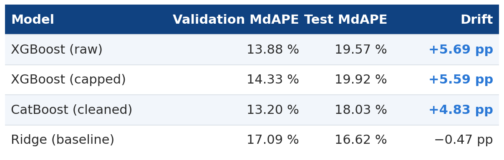
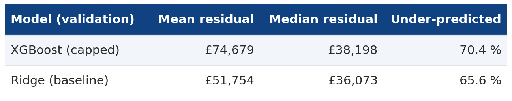
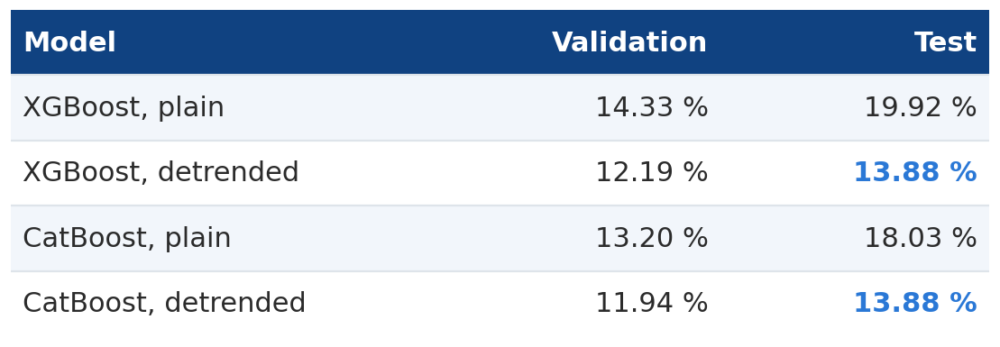
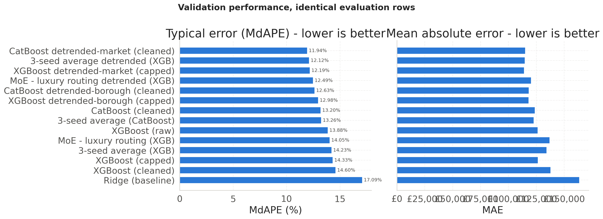
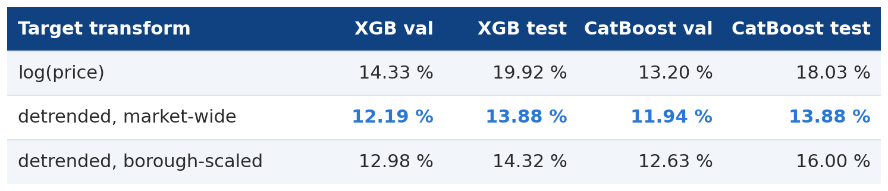
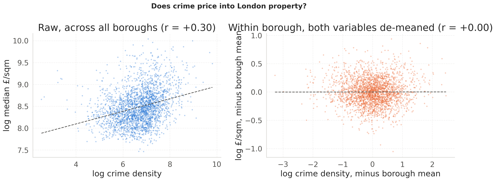
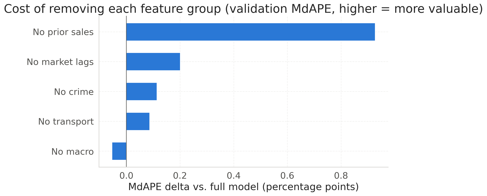
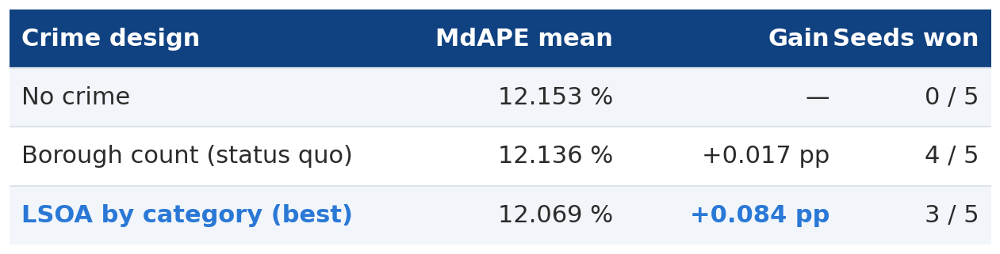
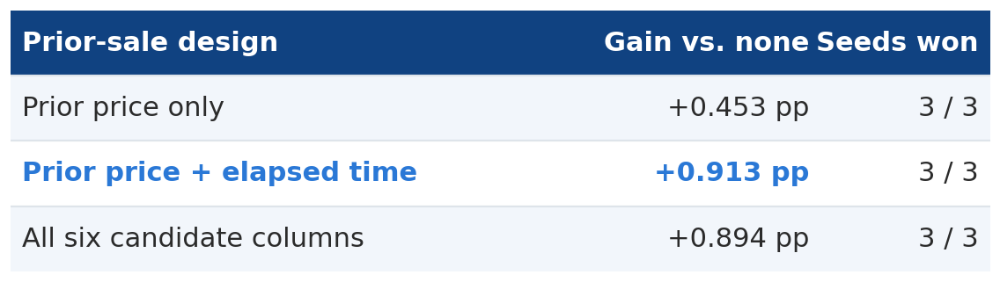
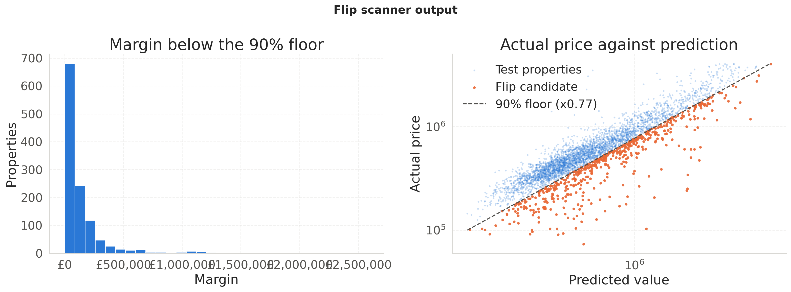

London Flip Finder · Applied Data Science, Bar-Ilan University
A linear baseline beat XGBoost and CatBoost on 60,000 London property sales. The fix wasn't a better model.
Halfway through building a valuation model for London property, I hit a result that should not happen.
On tabular data — 60,000 rows, 28 features, a mix of numeric and categorical — gradient-boosted trees are supposed to win. That is the whole reason they are the default. Instead, on the held-out test set, my plain XGBoost and CatBoost models scored 19.57 % to 20.25 % median absolute percentage error, while a Ridge regression with alpha=1.0 and no tuning at all scored 16.62 %.
Worse, they had looked fine right up until that moment:

Every tree model beat Ridge on validation. Every tree model then lost to it on test, dropping five to six percentage points, while the linear model actually got better.
That asymmetry is the tell. A model that overfits degrades on new data — but it does not degrade five times more than the linear model sitting next to it. Something structural was wrong, and it wasn't the architecture.
The project: given a London property's physical, spatial, temporal and macroeconomic context, what is it worth — and can we flag sales priced below a floor we can actually defend?
The data is 59,946 transactions between 2008 and 2016, assembled from four public sources: a Land-Registry-derived price history, Metropolitan Police crime by neighbourhood and month, the Bank of England base rate, and Transport for London station geodata. One rule governed every design decision: only use what a buyer standing at the transaction date could have known.
That rule is why the split is chronological — 60 / 15 / 10 / 15 into train, validation, calibration and test — rather than random. Training on June 2016 to predict January 2016 is a situation that never occurs in production, so it shouldn't occur in evaluation either.
It is also, as it turns out, why the trees failed.
Here is the mechanism.
A decision tree's prediction is a constant per leaf. It has no slope, no coefficient, no capacity to extrapolate. Once a value of a trending feature — days_since_start, or a rolling market median — exceeds anything the tree saw in training, every such row falls into the same boundary leaf, and the model flat-lines at the last price level it learned.
London prices rose substantially across 2008–2016. My training split ends in April 2014. The test split runs from December 2015 to December 2016. The trees were being asked to predict a market level they had never seen, using a mechanism that structurally cannot project one.
Ridge suffers less, because it multiplies by a coefficient instead of splitting on a threshold — so it at least projects the trend forward, even if imperfectly.
That diagnosis makes a falsifiable prediction: if this is right, the plain trees should under-predict with a large, one-directional positive mean residual — a level error, not symmetric noise. So I measured it, on validation only:

There it is. Plain XGBoost under-predicts by a mean of £74,679 and gets 70 % of rows too low. That is not noise; that is a systematic level error.
Note the second row, though, because it complicates the tidy story: Ridge under-predicts too, by £51,754. The market rose faster than any linear projection of the training window could follow. What separates the models is the size of the level error, not its presence.
So the accurate claim is not "trees can't extrapolate and linear models can." It is: a non-stationary target biases every model here, and punishes trees hardest.
Which means the fix should target the shared cause, not the architecture.
If the problem is that the target moves, then don't predict the target. Predict its ratio to where the market already is:
# market_median_rolling_3m: the market-wide monthly median, shifted one month
# and then rolled -- so a month's own median never informs its own prediction
y = log(price / market_level)
model.fit(X_train, y)
price_hat = exp(model.predict(X)) * market_level"How much is this property worth relative to the current market" is close to stationary even while the market itself trends. A tree only has to interpolate within a range of ratios it has already seen. At inference, the market level is multiplied back on.
The deflator is a feature I already had, built to be leakage-safe: the market-wide median is .shift(1)-ed before the rolling window opens, so no month can see itself.
Two lines of conceptual change. Here is what it bought:

Six points of test MdAPE on XGBoost. Four on CatBoost. And the residual bias collapsed from £74,679 to £24,331.

On the full leaderboard the effect is a clean block structure: every model trained on log(price / market level) outranks every model trained on log(price), with no interleaving. No architecture change in the project came close — not CatBoost's native categorical handling, not a mixture-of-experts with a luxury router, not seed averaging.
The target was the bottleneck. Not the model.
Having established that a deflator helps, the obvious next move is a better deflator. Instead of dividing by one market-wide median shared by every property that month, why not divide by something local — the median price per square metre in that specific borough, times the property's floor area? Comparable properties, personalised per row. It should carry more signal.
It doesn't. I tested it, and the coarser deflator won for both backends:

The reason is worth internalising, because it applies well beyond property data.
The borough median is estimated from one borough's transactions in a three-month window. The market-wide median is estimated from the entire city's. The borough figure is noisier — and because the deflator is a divisor, that noise goes directly into every training label it divides. It doesn't become one more slightly-noisy feature the model can learn to down-weight. It corrupts the ground truth.
Meanwhile the coarse deflator costs nothing, because borough, floorAreaSqM and the borough median all remain ordinary input features. The tree is still free to learn "this borough commands a premium" — from uncorrupted labels.
A detrending deflator should remove only what the architecture genuinely cannot learn on its own. Anything the model could already learn from a feature should stay a feature, not get folded into the label.
The second finding is one I expected to go the other way.
Crime was in this project from the start, and it was expensive: the Met Police file only covers 2008–2016, and that single constraint is why the entire modelling window stops there — 59,946 in-window sales against 314,895 in the full history. Eighty-one percent of the available record, discarded to accommodate one feature block.
The exploratory signal looked promising, then immediately suspicious. Across London, neighbourhood crime correlates positively with price (r = +0.30) — more crime, more money, which is backwards from what buyers say they care about.

It's a confound, and a big one. Central London is simultaneously the most expensive and the most crime-recording part of the city, so a raw correlation largely measures centrality. Subtract each borough's own mean from both variables and the relationship vanishes: r = +0.00. Ask a different question entirely — did neighbourhoods where crime fell see faster price growth? — and you get r = −0.01 across 863 areas.
But a feature can carry no marginal correlation and still earn its place by interacting inside a model. So I put the same question to the fitted model, with the bar fixed in advance at 0.15 percentage points of validation MdAPE.

Crime came in at +0.11 pp. Below the bar.
The tempting move is to stop there. But the ablation had removed borough-grain, unnormalised, all-category crime — and the raw file is at neighbourhood grain, 4,835 areas summed into 33 boroughs. That's a 147× loss of resolution. "Crime doesn't matter" and "crime measured 147× too coarsely doesn't matter" are different claims, and I'd only tested the second.
So I refit six crime designs — borough vs neighbourhood grain, count vs rate, whole vs split by category — each under five random seeds, with each gain paired within its own seed:

The best design still fails the gate. More importantly, it fails a second bar: the seed noise floor — the mean standard deviation of one design across seeds — is 0.097 pp, and this design's own gain has a standard deviation of 0.187. The effect is smaller than the noise it was measured through. This experiment cannot resolve it at all.
Verdict: crime does not earn the window. Measured 147× more finely, normalised, and split by category, it still didn't clear. The next iteration drops it and widens to 1995–2024 — roughly five times the data.
That's a null result I'm confident in, precisely because the gate and the noise floor were fixed before the numbers came in.
The third finding is the most humbling.
The source file is a price history, not a transaction list — 418,201 rows covering 137,760 unique addresses, of which 66 % sold more than once. Within the modelling window, 61.1 % of sales have an earlier sale of the same property, typically about seven years prior.
The first version of this pipeline used none of it. It read a price history as a transaction log.
Every other feature asks what is a property like this worth? A prior sale asks a different and far easier question: what was this exact property worth last time, and how far has the market moved since? Quality, layout, street and lease are all held fixed between the two observations — the logic behind the repeat-sales index literature going back to Bailey, Muth and Nourse (1963).
Measured on the same gate and protocol as crime:

Six times the gate, winning on every seed — against crime's +0.084 pp with a standard deviation larger than its mean.
And note the middle row. The prior price alone is worth +0.45 pp. Adding when that sale happened doubles it. A past price is only interpretable against how long ago it was paid: £400k in 2009 and £400k in 2015 say very different things about what a property is worth now.
Row three is a useful negative: carrying all six candidate columns scored worse than carrying four. log_prev_sale_price earned nothing, because a tree splits on order and the log of a column it already holds is the same ordering.
The largest gain in the entire project came from re-reading data I already had.
A point estimate is not something you can spend money on. It carries no statement of how wrong it might be.
So the last step wraps the prediction in a one-sided conformal floor. On a calibration split that nothing else touches, compute the ratio of actual to predicted price for every property, take the 10th percentile, and use it as a multiplier:
r = actual / predicted # calibration split only
q_10 = quantile(r, 0.10) # -> 0.7674
floor = predicted * q_10 # flag when price < floorRatios rather than differences, because errors in this market are heteroscedastic — a £3 M house misses by far more pounds than a £200k flat while being no less accurate in percentage terms. A single absolute quantile would be far too loose at the bottom and far too tight at the top.
Only the lower tail is kept. A screen for underpriced property cares about the floor, not the ceiling.

On the held-out test set the floor covers 86.61 % of sales against its 90 % target, flagging 1,186 of 8,859 properties with a median margin of £66,124 below their floor.
I'm reporting that shortfall rather than correcting it. Conformal prediction assumes calibration and test data are exchangeable, and a chronological split does not guarantee that — the market drifted between the two windows. Correcting the multiplier against the test set would turn test into a tuning signal, which is the one thing holding it out was meant to prevent. On a held-out slice of the calibration split, where exchangeability does hold, coverage is 88.39 %.
The scanner evaluates completed sales, not listings anyone can buy. A "flip candidate" is a statistical claim, not a financial one — it says nothing about stamp duty, refurbishment, or why a property is cheap, and properties are usually cheap for a reason the data doesn't record. Lease length, above all: a leasehold flat with 70 years left is worth materially less than an identical one with 950, and that column simply isn't in the dataset.
Coverage is marginal, not conditional — roughly 90 % overall doesn't guarantee 90 % inside any one borough. And 23.8 % of test rows are properties that also appear in training, because the split cuts on time, not on property; on genuinely unseen stock the error is 14.30 % rather than 12.75 %.
If your gradient-boosted trees are losing to a linear baseline on tabular data, don't reach for a bigger model. Check whether your target is stationary over the split you're evaluating on. Trees interpolate; they cannot extrapolate a trend. If the thing you're predicting drifts, give them something that doesn't.
And before you add another model, re-read the data you already have.